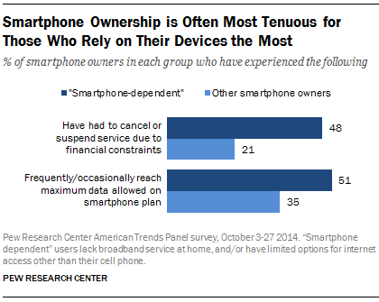
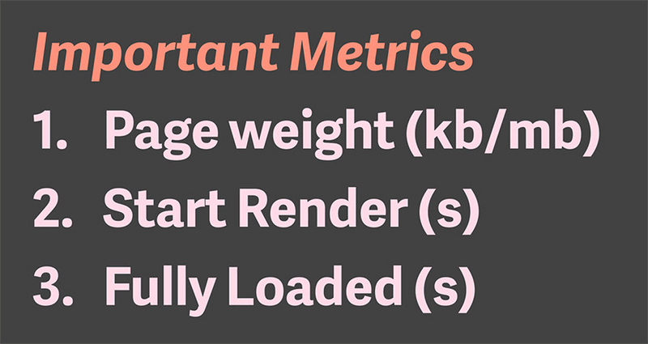
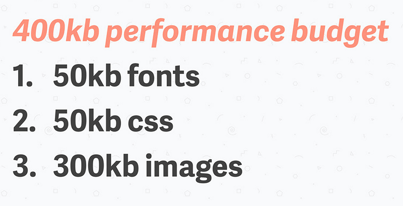

http://www.pewinternet.org/2015/04/01/us-smartphone-use-in-2015/

healthfinder.gov homepage [png]
Homepage → Health Conditions and Diseases →
Cancer→ Take Steps to Prevent Skin Cancer
| Step 1 | Step 2 | Step 3 | Step 4 | Total | |
|---|---|---|---|---|---|
| Load time | 11.3s | 4.5s | 3.8s | 5s | 24.6s |
| Cost | $0.12 | $0.11 | $0.11 | $0.13 | $0.47 |
3G connection from Miami, FL
We often frame our considerations for non-desktop users around a concern of usability.
What about these constraints?
All of these constraints could be deal-breakers that prevent users from accessing our websites.
Deal-breakers = Usability Accessibility issues
Improving website performance can be a solution for both usability and accessibility on mobile devices.
Making the distinction between accessibility issues and usability issues could be the leverage needed to convince stakeholders that performance is important.
Coding and server setup basics....
healthfinder.gov — Slow 3G connection in Oregon [video]
healthypeople.gov — Fast 3G connection in Florida [video]
Slow down your internet connection
and emulate popular mobile devices
using Google Chrome
HTML is fast, right out of the box!
We add things (images, JavaScript, CSS) to HTML improve appearance and functionality. Those additions also decrease performance.

https://speakerdeck.com/katiekovalcin/the-path-to-performance

https://speakerdeck.com/katiekovalcin/the-path-to-performance
The way people access the sites we build has changed and so have the constraints that those users face.
By building performance into our process from the start, we can reach wider variety of users.
Framing performance as a valid accessibility issue could help to convince clients to dedicate time and resources to improving performance.
We can all use freely available tools to identify performance issues and be armed with compelling visual data for clients
Real performance data that compares speed before and after improvements can quantify the effort beyond users saying “This loads fast!”